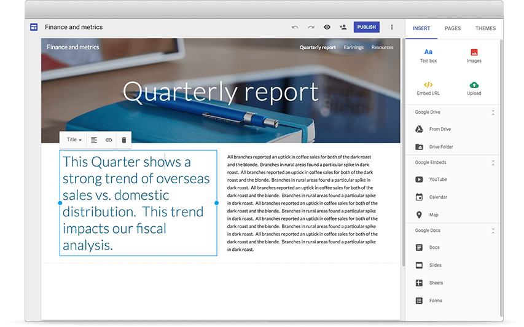

Every designer needs to have a portfolio showcasing their latest work. How can I put my work on display? ü§î
Goals
A functional, user-friendly, mobile responsive website that allows me to show off my work, while not breaking the bank. I put mobile responsiveness as one of the top pillars of this project, because mobile devices account for the majority of web traffic these days.
Hypothesis
Some of the top portfolio mistakes are addressing the wrong audience, and lack of mobile responsiveness. I believe that recruiters are most frustrated about finding suitable candidates because few have portfolios that stand out as well crafted.
Users and Audience
The target audience is recruiters, classmates, current or former employers, or anyone who wants to take a look at my work.
Options
The obvious choice is picking a theme from a website builder. The best options according to popularity are GoDaddy, Weebly, Wix, SquareSpace, and, for something slightly more involved, WebFlow. Alternatively, I could build a website myself.
Challenges & Evolution of Solutions
I wanted my portfolio to stand out, so template sites such as Wix, Squarespace, and the like were ruled out.❌
Although WebFlow provides a great amount of control over your website, with customizable responsive adaptation, another constraint of mine was budget. Webflow costs $16/mo to maintain, and that was something that I wasn’t interested in paying.❌
Additionally, something that I thought would allow me to have a decent amount of control as well as be free was Google Sites.

This is a free service provided by Google, so I thought I’d give it a shot. It was easy, but there wasn’t enough customization to fit my vision.❌
The final option would be to build out my own website. This was by far the lengthiest option, but also the cheapest and most customizable. Ultimately, this is the option I picked. ✅
Sketching
I had a vision in mind when drafting up this website, and this is a very rough sketch of it I made so that I wouldn't forget.
Storyboard
I made a story board to get a feel for the most important things I need to get right. This outlines the basic process I want a user to go through.
Wireframe & Prototype/Accessibility
Once I got the idea of what I wanted the user to go through, and what I need to emphasize, it was time to get to work with a wireframe. I wanted a distinct full-page “3rds” look, since I had seen very few portfolios do this.
Some things I kept in mind at this stage were that the buttons on mobile needed to be on the right side, since most people are right-handed, and that the important buttons such as “View my work” and “Contact me” should stand out and entice people to click on them. I made a quick first draft, and I liked it upon first glance.
Unfortunately, there were several glaring issues. The content on mobile was too small, and what should’ve been the giant “CONTACT ME!!!” button was obscured.
The biggest problem, however, were the colors. If this website were to be viewed by a colorblind person, they might be missing or have immense trouble finding content. Some elements completely disappeared.
The solutions to these problems were to think about colors and to modify the mobile layout. I decided to go with blue as it invokes feelings of serenity, imagination, inspiration, sincerity, wisdom, and confidence. I chose a good shade and then complementary shades of different hue, saturation, and lightness values to make them stand out.
After a few changes, this is how everything looked.
I still needed to make the “contact” button obvious on mobile, but that would come later. For now, this iteration passes the colorblind test with flying colors!
Development
After ironing out the issues with the contact button, the visibility on mobile, and the color contrasts, it was time to get to work developing the website. It was rough to start, but once I figured out how to get the 3rds layout going, I started to make steady progress.
Going Live
Once I was done building the website and putting my content on it, it was time to go live. I chose to host my website on GitHub Pages, since they let you host static pages for free. All I had to do now was link my domain up to it, and the website would be up!
Testing Criteria
Once my website was live, I began user testing.
I decided to go for qualitative and quantitative data. I kept the scope of the testing narrow and allowed my users to comment for additional feedback. Some questions I asked were:
Is the website obvious to navigate on all devices?
How quickly can my audience go from the home page to my case studies?
The vast majority of users surveyed (24/25) said the website is immediately obvious and easy to navigate. One person noted that they’d like the home button (top left) to function while already on the home page. Another person noted that they wished some of the images would be smaller, since their internet connection is on the slower side.
The average user was able to get from the home page of my website to my case studies in 2.8 seconds. My old portfolio saw users reach the relevant section of the website in 4.5 seconds, due to inconvenient layout and unclear labeling of sections.
With this re-design, I was able to speed up the time it takes to reach my work by 62%, provide a mobile friendly experience, and learn a lot in the process.
Take-aways
On this project, I learned that building out a whole website alone is quite the task. The scope of the project was quite large, and it took me longer to finish than I thought. Though I had many frustrations working with CSS, I am very glad that I didn’t try to find shortcuts. I stuck to my design plan, and saw my vision all the way through.